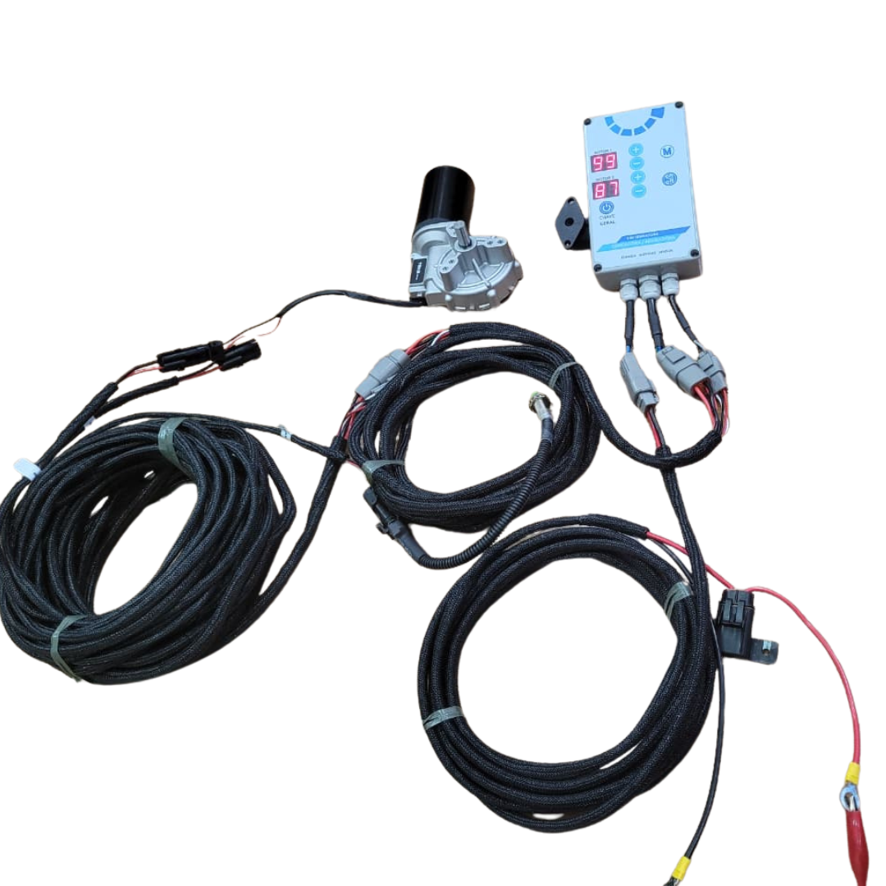
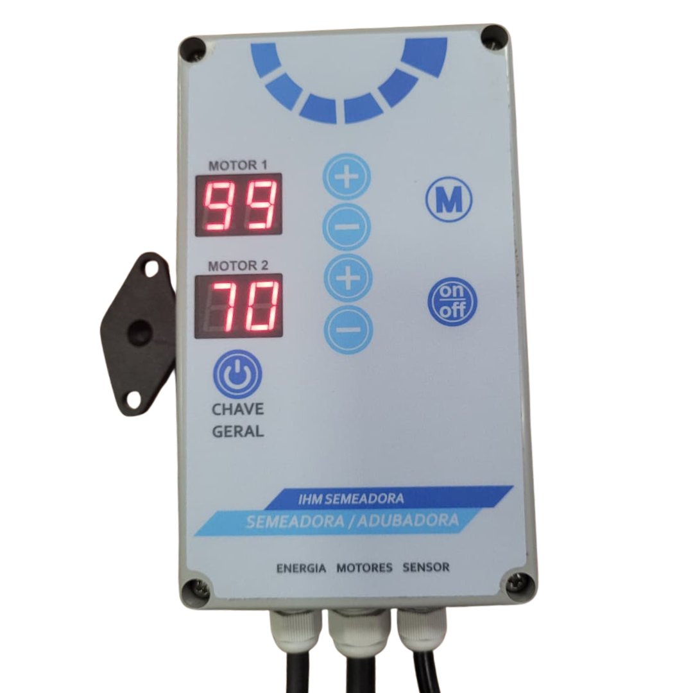
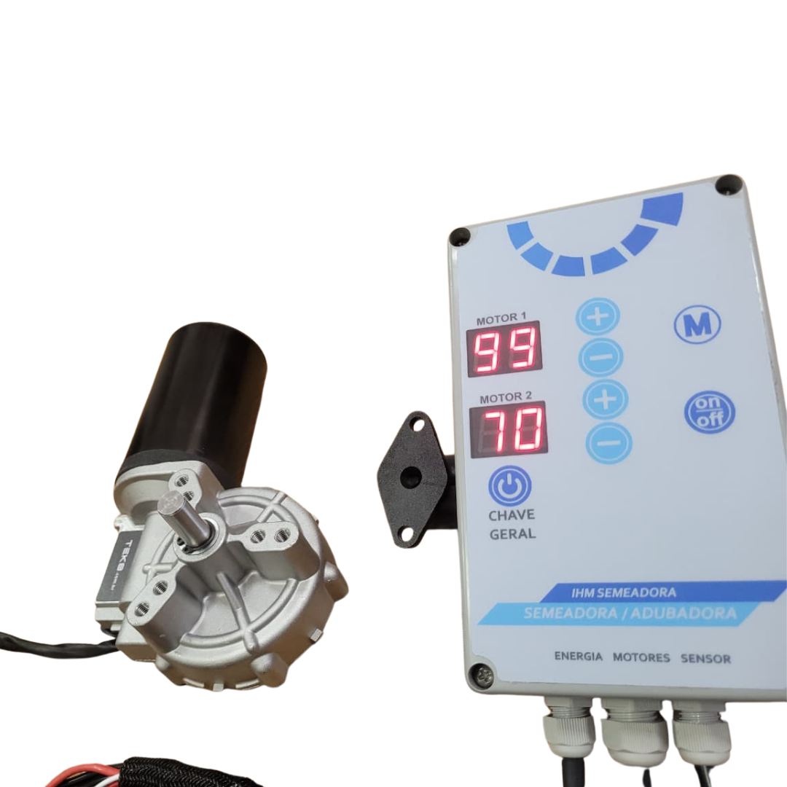
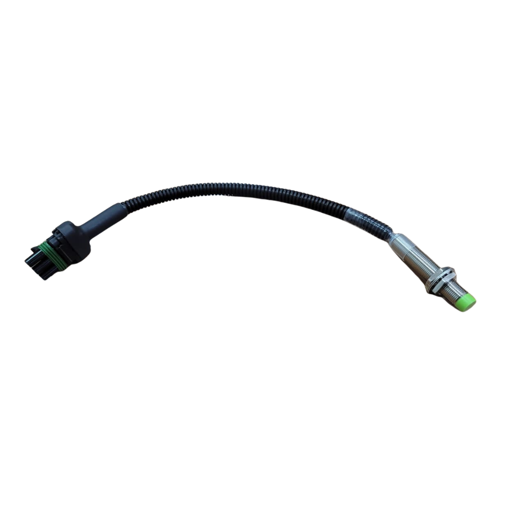
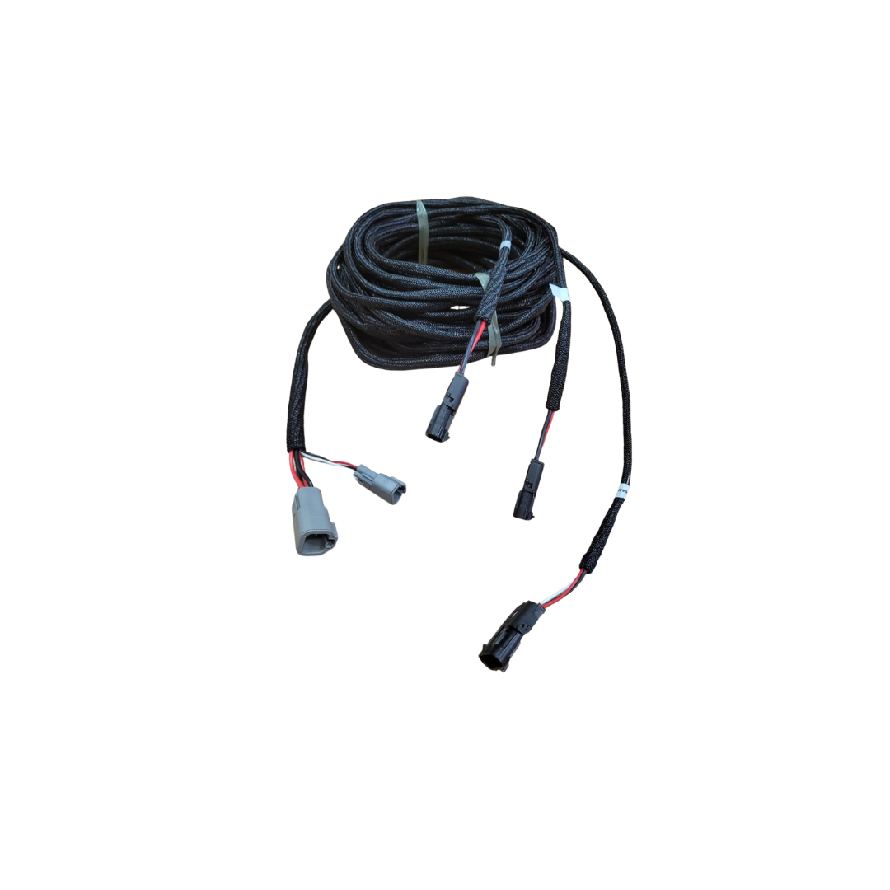
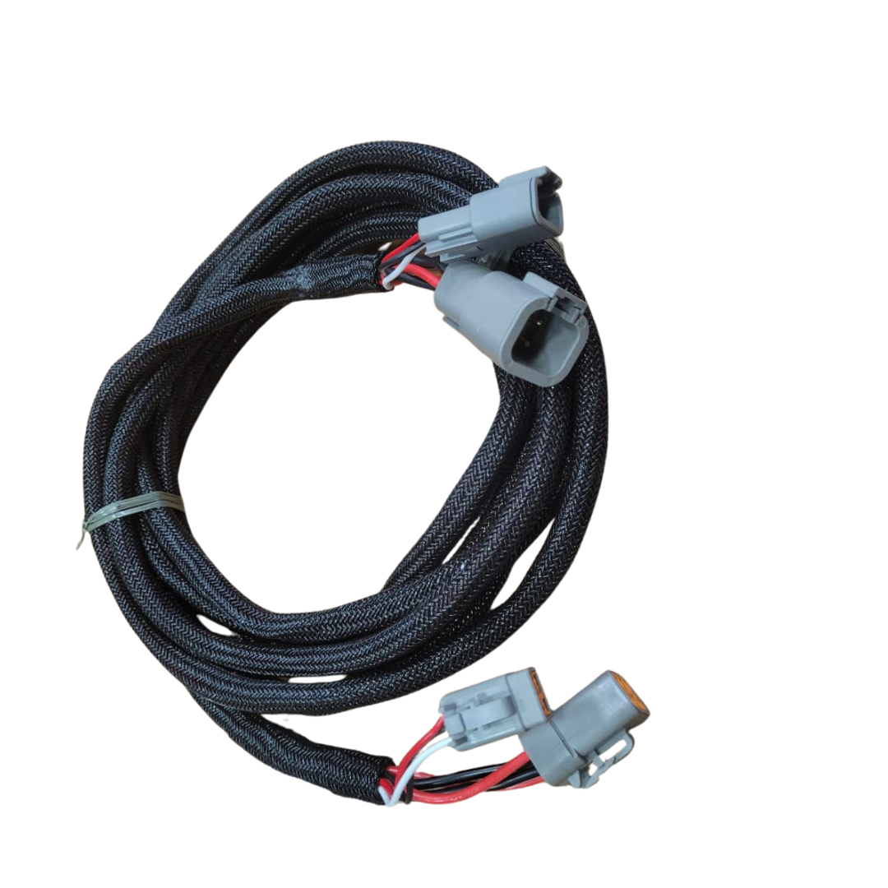
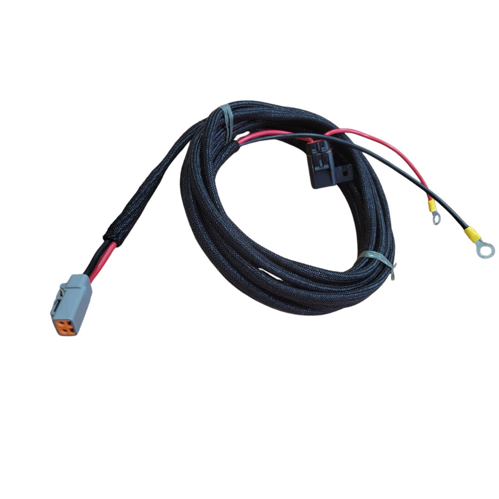
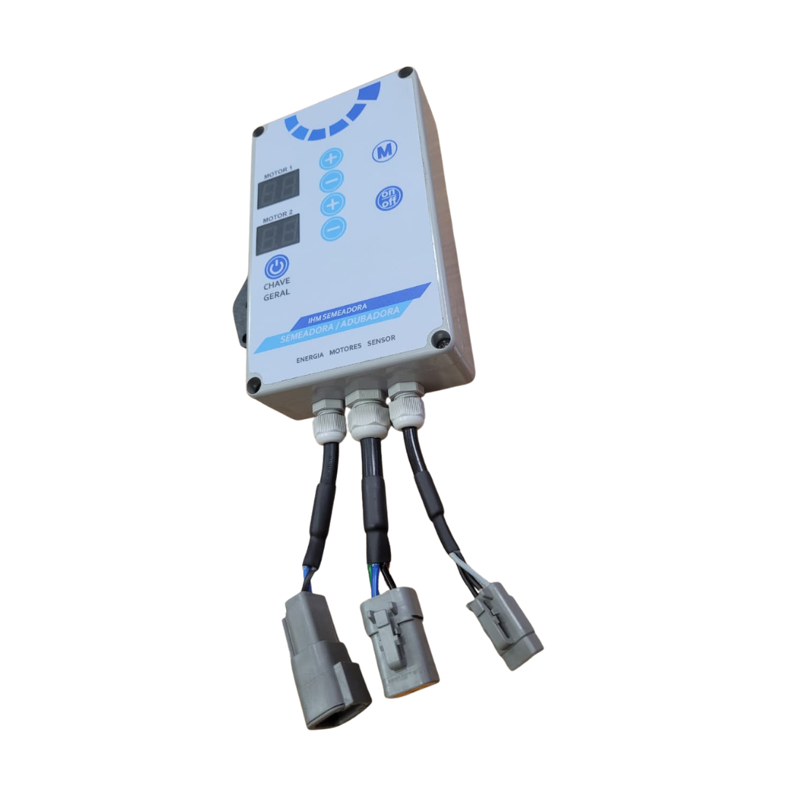

Sistema eletrônico completo para automação de dosadores em semeadoras e adubadoras. Controle individual de dois motores DC 12V diretamente da cabine do trator, com acionamento automático baseado na posição da semeadora.

Três razões que diferenciam o KT-C2M de qualquer solução artesanal ou mecânica convencional.
Ajuste a taxa de dosagem de cada motor individualmente pelo painel digital, sem parar o trator ou o implemento.
O sensor indutivo identifica se a semeadora está abaixada ou levantada. Abaixada: autoriza o acionamento dos motores. Levantada: interrompe automaticamente a dosagem.
Chicotes pré-fabricados com conectores Deutsch selados. Conexão direta, sem cortes, sem soldas — instalação em campo.
O sistema KT-C2M opera em modo manual ou automático. No modo automático, o sensor indutivo de posição comanda o acionamento dos motores conforme a posição da semeadora no campo.
O chicote de alimentação (CB-002750) conecta o sistema diretamente à bateria de 12V do trator, com fusível integrado para proteção do circuito.
O operador define a potência de cada motor pelo painel digital. Dois displays independentes — MOTOR 1 e MOTOR 2 — exibem o valor configurado em tempo real.
O sinal de controle percorre do chicote de cabine (CB-002751) ao chicote externo (CB-002752), distribuindo o comando aos dois motores ao longo do implemento.
Cada motor DC 12V — 30 RPM (PC-0345) aciona o eixo do dosador com rotação estável e proporcional ao valor definido no painel, de forma totalmente independente.
O dosador distribui sementes ou fertilizantes com uniformidade ao longo de toda a faixa de trabalho, sem variações causadas por irregularidades do terreno ou velocidade do trator.
O sensor indutivo (CB-002753) detecta se a semeadora está abaixada ou levantada. Abaixada: capta o pulso de rotação e autoriza o acionamento automático dos motores. Levantada: interrompe os motores imediatamente, sem intervenção do operador.
Cada elemento do painel foi projetado para facilitar a operação em campo, mesmo em cabines com vibração e luminosidade intensa.

PC-0347 · Painel IHM Semeadora
Display de 7 segmentos em vermelho de alta visibilidade. Exibe o valor de potência configurado para o Motor 1 (0–99), atualizado em tempo real.
Canal completamente independente do Motor 1. Permite dosagens diferentes para semente e adubo simultaneamente, em um único painel.
Incremento e decremento da velocidade de cada motor de forma individual. Ajuste direto pelo operador sem parar o equipamento.
Salva e recupera configurações de taxa de aplicação previamente programadas. Ideal para alternar entre culturas ou talhões diferentes.
Liga e desliga os motores individualmente (ON/OFF) ou todo o sistema (Chave Geral), sem perder os valores configurados nos displays.
Três conectores Deutsch na base do painel: alimentação 12V, chicote dos dois motores e sensor indutivo de posição — responsável pelo acionamento automático.
Oito itens fornecidos como kit completo, prontos para instalação em qualquer semeadora compatível.





O KT-C2M é compatível com qualquer semeadora ou adubadora que utilize motor DC 12V no acionamento do dosador.
Dosagem precisa de sementes de baixo peso específico para formação e reforma de pastagens.
Controle eletrônico da taxa de semeadura para cobertura de solo e integração lavoura-pecuária.
Andropogon, Mombaça, Massai, Quicuio e demais gramíneas forrageiras com sementes finas.
Aveia, nabo forrageiro, crotalária e misturas para plantio direto e proteção do solo.
Motor 2 dedicado ao fertilizante granulado, com taxa independente e simultânea à semeadura.
Semente no Motor 1 e adubo no Motor 2 — duas taxas diferentes, controladas pelo mesmo painel.
Controle eletrônico ideal para culturas de baixo fluxo que exigem alta uniformidade de distribuição.
Compatível com semeadoras de arrasto, três pontos e implementos adaptados com motor DC 12V.
| Código do produto | KT-C2M |
| Tipo | Kit de automação para semeadoras |
| Motores controlados | Até 02 — independentes |
| Tensão de operação | 12V DC (bateria do trator) |
| Interface | Painel IHM com display LED digital |
| Conectores | Deutsch DT / Delphi 2 vias |
| Instalação | Plug & Play — sem solda em campo |
| Itens no kit | 8 componentes inclusos |
| Display | LED vermelho 7 segmentos (2 canais) |
| Faixa de ajuste | 0 a 99 por canal |
| Controle por canal | Botões + e − independentes |
| Função memória | Sim — botão M |
| Liga/desliga por canal | Sim — botão ON/OFF |
| Chave geral | Sim — desliga todo o sistema |
| Saídas | ENERGIA · MOTORES · SENSOR |
| Fixação | Suporte RAM Mount articulado (incluso) |
| Tensão nominal | 12V DC |
| Velocidade de saída | 30 RPM |
| Redutor | Caixa de redução integrada |
| Conector | Delphi 2 vias |
| Quantidade no kit | 2 unidades |
| Aplicação | Acionamento de eixo dosador |
| Tipo | Sensor indutivo cilíndrico |
| Corpo | Metálico — rosca M12 |
| Identificação visual | Ponta verde |
| Proteção do cabo | Mangueira corrugada |
| Conector | Deutsch 3 vias preto |
| Função | Detecção de posição da semeadora (abaixada/levantada) para acionamento automático dos motores |

Entre em contato com a equipe ASJ Tecnologia e descubra como o KT-C2M pode ser instalado no seu equipamento.